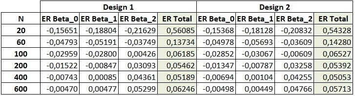
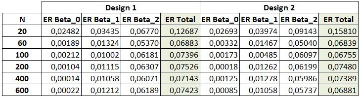

Overview
In this exercise, the correction proposed by White will be explored to estimate the variance and covariance of the coefficients obtained through ordinary least squares in finite samples. The main objective is to understand the calculation of this matrix in the presence of heteroskedasticity. In this way, the variance to be estimated is sought, which is defined as follows:
Let’s consider the following model:
The same applies to two variants depending on the behavior of the error:
The population model considers that each of the β coefficients is equal to 1. 5000 replicates of this model have been estimated for each of the error designs for different sample sizes (20, 60, 100, 200, 400, and 600). It is important to highlight that the error depends on the variables and through the factor .
With the results of the estimations, we proceed to calculate the White matrix, from which we then extract the relative errors for each of the β coefficients and the total error, which is the sum of the individual errors.
Python Code and Analysis
The population model considers that each of the β coefficients is equal to 1. 5000 replicates of this model have been estimated for each of the error designs for different sample sizes (20, 60, 100, 200, 400, and 600). It is important to highlight that the error depends on the variables and through the factor .
With the results of the estimations, we proceed to calculate the White matrix, from which we then extract the relative errors for each of the β coefficients and the total error, which is the sum of the individual errors.
import numpy as np
import pandas as pd
import statsmodels.api as sm
import scipy.stats as stats
# Define the seed for replicability
np.random.seed(4678)
# Number of replications
num_simulations = 5000
# Sample size
N = [1, 3, 5, 10, 20, 30]
# Designs
designs = [1, 2]
# Function to perform a simulation
def simulate(n, design, use_true_errors=False):
num_replications = num_simulations
errors = np.zeros((num_replications, 12))
for m in range(num_replications):
# Generate data
X1 = np.tile(np.array([-1.1] + list(np.linspace(-1, 1, 18)) + [1.1]), n)
X2 = np.random.normal(0, 1, 20 * n)
X = np.column_stack((np.ones(20 * n), X1, X2))
# Generate data according to the chosen design
if design == 1:
u = np.random.normal(0, 1, 20 * n) # Design 1
elif design == 2:
u = stats.t.rvs(5, size=20*n) # Design 2
V = np.exp(0.25 * X1 + 0.25 * X2)
Y = 1 + X1 + X2 + np.sqrt(V) * u # u depends on the design selected when executing the function
# Ordinary Least Squares Estimation
model = sm.OLS(Y, X)
results = model.fit()
# Construction of White's matrix
# Define the type of error to be used
if use_true_errors:
omega_hat = np.diag(V * u**2) # Use real errors
else:
residuals = results.resid
omega_hat = np.diag(residuals**2) # Use the squared residuals
# Construct the white matrix using the true errors or squared residuals as selected.
var_cov_matrix_white = np.linalg.inv(X.T @ X) @ X.T @ omega_hat @ X @ np.linalg.inv(X.T @ X)
# Add individual relative biases
errors[m, 0:3] = (var_cov_matrix_white[0, 0] - results.cov_params()[0, 0]) / results.cov_params()[0, 0]
errors[m, 4:7] = (var_cov_matrix_white[1, 1] - results.cov_params()[1, 1]) / results.cov_params()[1, 1]
errors[m, 8:11] = (var_cov_matrix_white[2, 2] - results.cov_params()[2, 2]) / results.cov_params()[2, 2]
return errors
# Define an empty DataFrame to then add the information
df_results = pd.DataFrame(columns=['Design', 'N', 'ER Beta_0', 'ER Beta_1', 'ER Beta_2', 'ER Total'])
# Iterate through the designs, thus ensuring that Design 1 and then Design 2 are estimated first.
for design in designs:
# Iterate by sample sizes
for n in N:
# Calculate the errors for White's matrix with true errors, for this we use use_true_errors=True
errors_true_errors = simulate(n, design, use_true_errors=True)
# Calculation of the mean of individual relative biases
individual_relative_biases_true_errors = np.mean(errors_true_errors, axis=0)
# Calculate the total relative bias as the sum of the absolute value of the individual relative biases.
individual_relative_bias_true_errors = np.abs(individual_relative_biases_true_errors[0]) + np.abs(individual_relative_biases_true_errors[4]) + np.abs(individual_relative_biases_true_errors[8])
# Add results to the DataFrame for true errors
df_results = pd.concat([df_results, pd.DataFrame({
'Design': [design],
'N': [n * 20],
'ER Beta_0': [individual_relative_biases_true_errors[0]],
'ER Beta_1': [individual_relative_biases_true_errors[4]],
'ER Beta_2': [individual_relative_biases_true_errors[8]],
'ER Total': [individual_relative_bias_true_errors],
'Error Type': ['True']
})], ignore_index=True)
# Calculate the errors for White's matrix with squared residuals, for this we use use_true_errors=False
errors_resid_squared = simulate(n, design, use_true_errors=False)
# Calculation of the mean of individual relative biases
individual_relative_biases_sq_resid = np.mean(errors_resid_squared, axis=0)
# Calculate the total relative bias as the sum of the absolute value of the individual relative biases.
individual_relative_bias_sq_resid = np.abs(individual_relative_biases_sq_resid[0]) + np.abs(individual_relative_biases_sq_resid[4]) + np.abs(individual_relative_biases_sq_resid[8])
# Add results to the DataFrame for true errors
df_results = pd.concat([df_results, pd.DataFrame({
'Design': [design],
'N': [n * 20],
'ER Beta_0': [individual_relative_biases_sq_resid[0]],
'ER Beta_1': [individual_relative_biases_sq_resid[4]],
'ER Beta_2': [individual_relative_biases_sq_resid[8]],
'ER Total': [individual_relative_bias_sq_resid],
'Error Type': ['Square Residuals']
})], ignore_index=True)
First, the model replicas were estimated and the White matrix was calculated using the MCC residuals. The results of this case are reflected in Table 1, where it is verified that both individual and total errors decrease as the sample size increases. Therefore, we can affirm that the estimation of the variance and covariance matrix using the White correction is consistent.
Table 1: Relative errors of the white matrix using residual errors

square_res1 = df_results[(df_results["Design"] == 1) & (df_results["Error Type"] == "Square Residuals")]
square_res1.set_index('N', inplace=True)
square_res1 = square_res1.drop(['Design', 'Error Type'], axis=1)
print(square_res1)
square_res2 = df_results[(df_results["Design"] == 2) & (df_results["Error Type"] == "Square Residuals")]
square_res2.set_index('N', inplace=True)
square_res2 = square_res2.drop(['Design', 'Error Type'], axis=1)
print(square_res2)
On the other hand, we have estimated the White correction matrix using the model's actual errors, instead of using the residual error. For this, we raised the actual errors to the square and introduced them into a diagonal matrix, obtaining as a result the relative errors shown in Table 2.
Table 2: Relative errors of the white matrix using real errors

true_error1 = df_results[(df_results["Design"] == 1) & (df_results["Error Type"] == "True")]
true_error1.set_index('N', inplace=True)
true_error1 = true_error1.drop(['Design', 'Error Type'], axis=1)
print(true_error1)
true_error2 = df_results[(df_results["Design"] == 2) & (df_results["Error Type"] == "True")]
true_error2.set_index('N', inplace=True)
true_error2 = true_error2.drop(['Design', 'Error Type'], axis=1)
print(true_error2)
The results in Table 2 indicate that, if we knew the actual errors and could use them to calculate the White correction matrix, then the relative errors would be much smaller than those obtained using the residual errors, for any sample size of N.
Conclusions
Based on the estimates made with the proposed model, we have been able to verify that the correction proposed by White for estimating the variance and covariance matrix using MCC is effective in addressing heteroscedasticity in finite samples.
Using this correction matrix, a decrease in relative errors, both individual and total, has been observed as the sample size increases. This suggests that the estimation is consistent and will provide more precise estimates as the sample size grows.
This latter point is verified both in the case of using residual errors and in the case where we use the model's actual errors. In favor of using actual errors, it has been observed that the relative errors obtained when considering these errors are lower than those obtained using residual errors. However, the main limitation we encounter is that the model's actual errors are unknown.
Therefore, we can conclude that the White correction matrix provides consistent estimates and that, if we knew the actual errors and could use them instead of residuals, the estimates would be even more consistent.